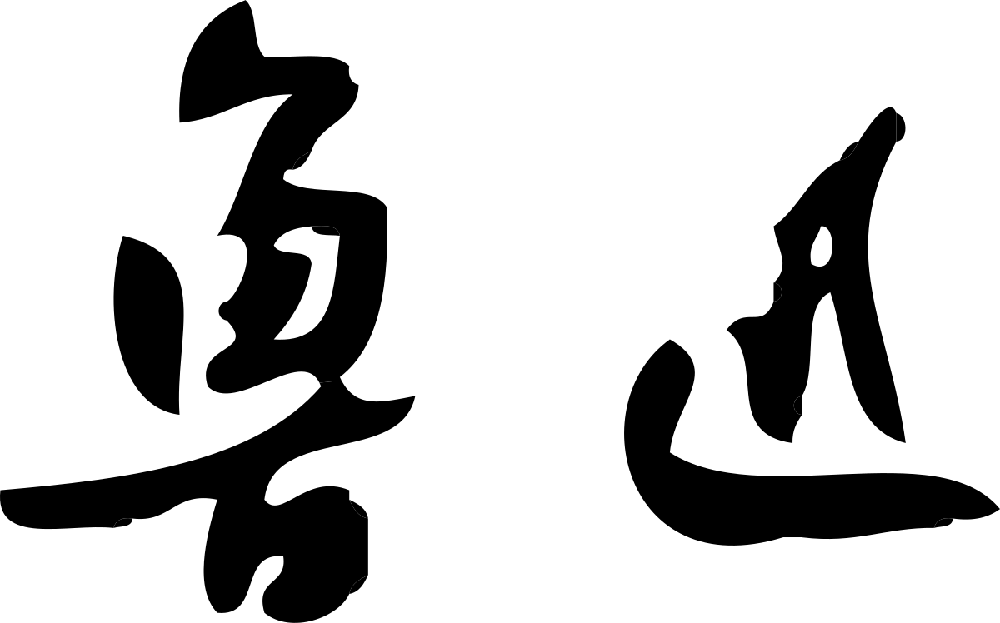
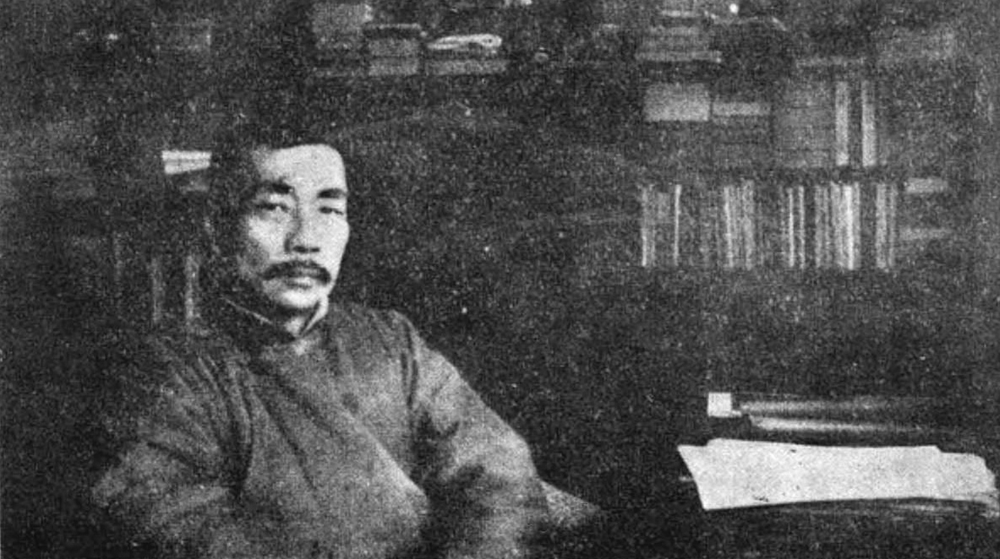
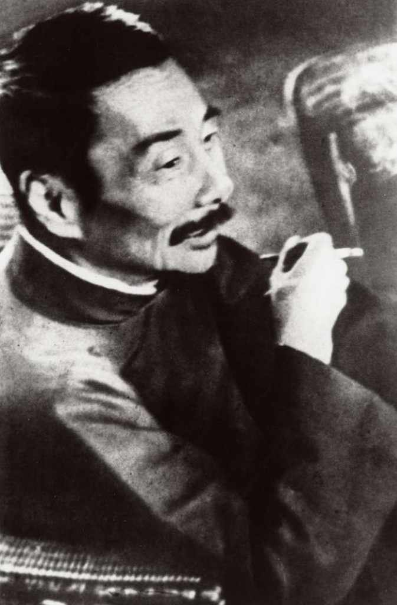

人物关系
从许寿裳、藤野严九郎到萧红与瞿秋白，沿着交往与事件理解鲁迅所处的文化网络。
查看人物关系图谱 →LU XUN 1881—1936
“愿中国青年都摆脱冷气，只是向上走，不必听自暴自弃者流的话。”
——《随感录四十一》，1919年


LITERATURE
小说解剖沉默的社会结构，散文保存复杂的记忆，散文诗进入幽暗的精神内部。先从三部作品进入鲁迅的文学世界。
THOUGHT & SPIRIT
鲁迅的文字并非可以摘成单一口号。把语句放回文章、年代和论争现场，才能看见批判背后的责任与行动。
进入有出处的经典语录库 →“无穷的远方，无数的人们，都和我有关。”
《这也是生活》，1936年
“其实地上本没有路，走的人多了，也便成了路。”
《故乡》，1921年
PEOPLE & ARCHIVE
朋友、学生、家人和论争对象，使鲁迅不再只是孤立的文学肖像；照片、文献与生活空间则让时代拥有可以辨认的质地。

书桌前的鲁迅上海 · 1928
木刻展上的最后影像上海 · 1936从许寿裳、藤野严九郎到萧红与瞿秋白，沿着交往与事件理解鲁迅所处的文化网络。
查看人物关系图谱 →人物、地点与文献三类馆藏，逐项记录年代、来源、授权和关联阅读。
进入历史影像馆 →ECHOES TODAY
展览不是结论。访客留下的疑问、感受与回应，让历史文本继续进入当下生活。
写下你的回响→